사회조사 2025 원변수 기초 EDA
응답자 33,944명(만 13세 이상), 18,467가구. 표본 %는 원자료 비율, 가중 %는 전국 추정 비율. 라벨은 통계청 코드북 기준.
51.6세평균 연령
4.9%장애인복지카드 소유
60.3%경제활동 참여
29.1%자녀 있음
1. 성별
| 범주 | 표본 수 | 표본 % | 가중 % |
|---|---|---|---|
| 남 | 16,401 | 48.3 | 49.6 |
| 여 | 17,543 | 51.7 | 50.4 |
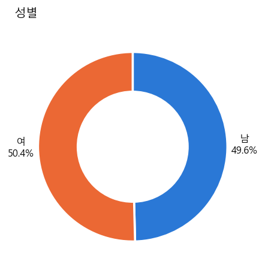
2. 만연령
평균 51.6세, 중앙값 53세, 표준편차 19.1, 범위 13~105세
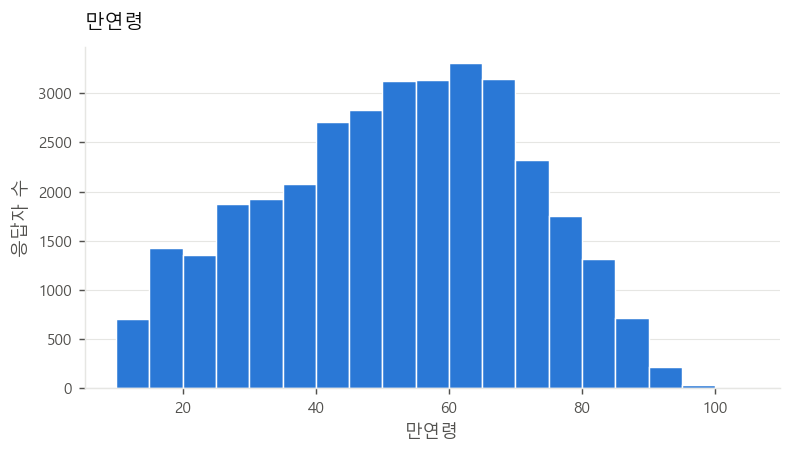
3. 가구주와의 관계
| 범주 | 표본 수 | 표본 % | 가중 % |
|---|---|---|---|
| 가구주 | 18,467 | 54.4 | 49.2 |
| 배우자 | 9,158 | 27.0 | 27.1 |
| 미혼 자녀 | 4,917 | 14.5 | 19.0 |
| 기혼자녀 및 그 배우자 | 227 | 0.7 | 0.7 |
| 손주 및 그 배우자 | 88 | 0.3 | 0.3 |
| 부모(배우자의 부모 포함) | 714 | 2.1 | 2.2 |
| 조부모(배우자의 조부모 포함) | 15 | 0.0 | 0.1 |
| 미혼 형제자매(배우자의 미혼 형제자매 포함) | 136 | 0.4 | 0.5 |
| 기타 친인척 | 111 | 0.3 | 0.4 |
| 기타 동거인 | 111 | 0.3 | 0.5 |
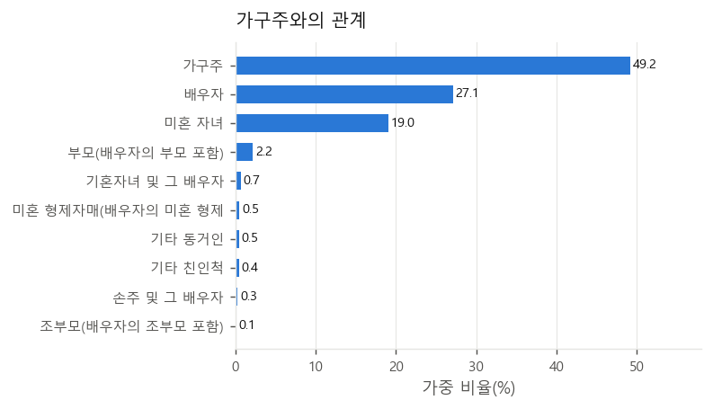
4. 혼인상태
| 범주 | 표본 수 | 표본 % | 가중 % |
|---|---|---|---|
| 미혼 | 8,317 | 24.5 | 29.0 |
| 배우자 있음 | 20,261 | 59.7 | 59.1 |
| 별거 | 281 | 0.8 | 0.7 |
| 이혼 | 2,008 | 5.9 | 5.0 |
| 사별 | 3,077 | 9.1 | 6.2 |
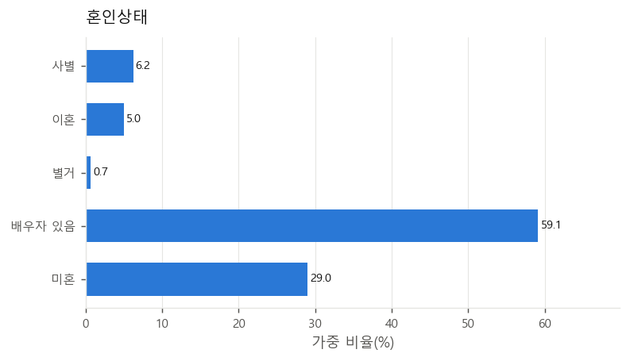
5. 교육정도
| 범주 | 표본 수 | 표본 % | 가중 % |
|---|---|---|---|
| 받지 않음 | 835 | 2.5 | 1.4 |
| 초등학교 | 3,279 | 9.7 | 7.0 |
| 중학교 | 3,744 | 11.0 | 9.8 |
| 고등학교 | 10,437 | 30.7 | 29.8 |
| 대학(교)(4년제 미만) | 5,047 | 14.9 | 16.2 |
| 대학교(4년제 이상) | 8,941 | 26.3 | 30.4 |
| 대학원 석사과정 | 1,314 | 3.9 | 4.3 |
| 대학원 박사 과정 | 347 | 1.0 | 1.1 |
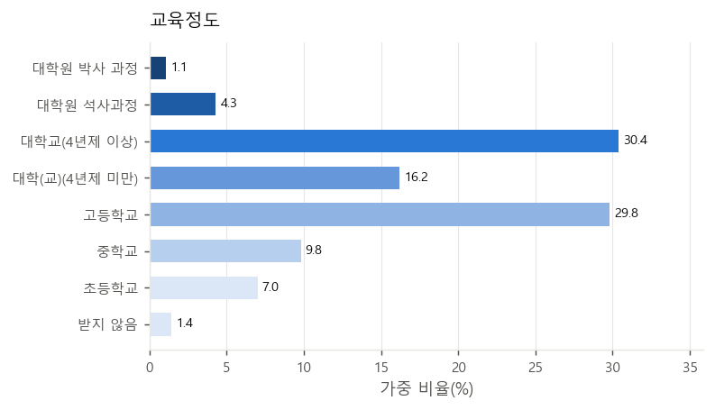
6. 재학상태
비해당·결측 835명 제외
| 범주 | 표본 수 | 표본 % | 가중 % |
|---|---|---|---|
| 졸업 | 27,851 | 84.1 | 83.1 |
| 수료 | 342 | 1.0 | 1.1 |
| 재학 | 2,788 | 8.4 | 9.6 |
| 휴학 | 228 | 0.7 | 0.9 |
| 중퇴 | 1,900 | 5.7 | 5.3 |
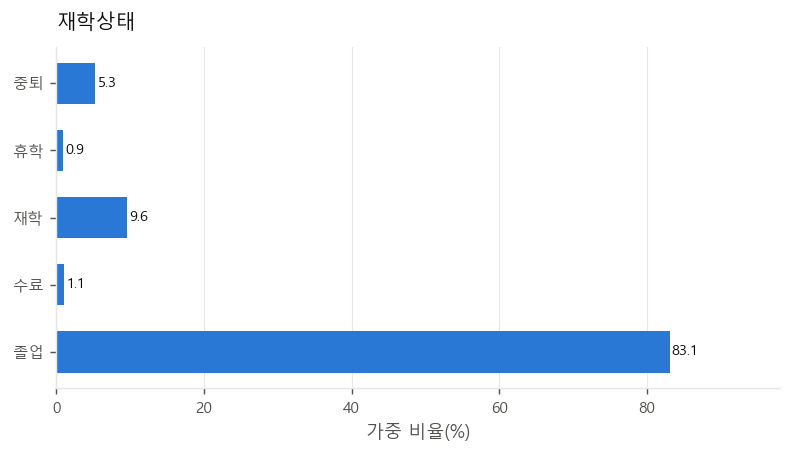
7. 현재국적
| 범주 | 표본 수 | 표본 % | 가중 % |
|---|---|---|---|
| 대한민국 | 33,388 | 98.4 | 98.0 |
| 외국 | 556 | 1.6 | 2.0 |
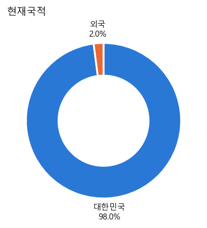
8. 거주 시도
| 범주 | 표본 수 | 표본 % | 가중 % |
|---|---|---|---|
| 서울 | 3,009 | 8.9 | 18.3 |
| 부산 | 1,821 | 5.4 | 6.3 |
| 대구 | 1,693 | 5.0 | 4.6 |
| 인천 | 1,725 | 5.1 | 5.9 |
| 광주 | 1,367 | 4.0 | 2.8 |
| 대전 | 1,363 | 4.0 | 2.8 |
| 울산 | 1,424 | 4.2 | 2.1 |
| 세종 | 1,175 | 3.5 | 0.7 |
| 경기 | 4,466 | 13.2 | 26.6 |
| 강원 | 1,816 | 5.3 | 2.9 |
| 충북 | 1,903 | 5.6 | 3.2 |
| 충남 | 2,002 | 5.9 | 4.3 |
| 전북 | 2,064 | 6.1 | 3.4 |
| 전남 | 1,918 | 5.7 | 3.5 |
| 경북 | 2,371 | 7.0 | 5.0 |
| 경남 | 2,521 | 7.4 | 6.3 |
| 제주 | 1,306 | 3.8 | 1.3 |
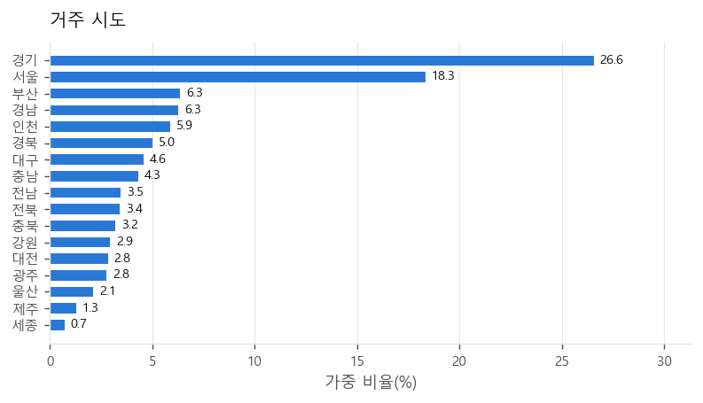
9. 동부/읍면부
| 범주 | 표본 수 | 표본 % | 가중 % |
|---|---|---|---|
| 동부 | 24,826 | 73.1 | 82.5 |
| 읍면부 | 9,118 | 26.9 | 17.5 |
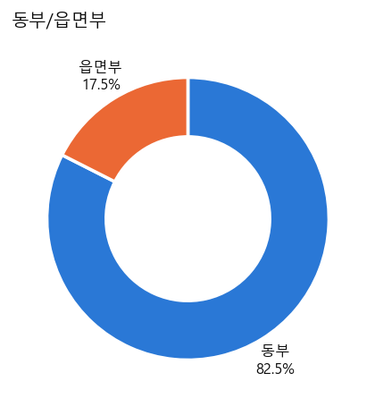
10. 가구원수
| 범주 | 표본 수 | 표본 % | 가중 % |
|---|---|---|---|
| 1인 | 7,168 | 21.1 | 14.9 |
| 2인 | 12,387 | 36.5 | 35.4 |
| 3인 | 7,133 | 21.0 | 24.5 |
| 4인 이상 | 7,256 | 21.4 | 25.2 |
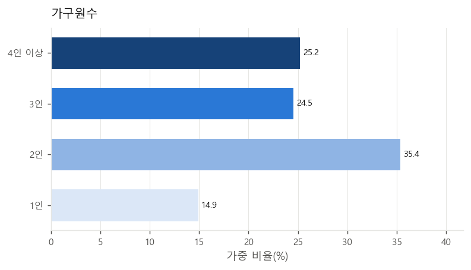
11. 장애인복지카드 소유
| 범주 | 표본 수 | 표본 % | 가중 % |
|---|---|---|---|
| 가지고 있다 | 2,052 | 6.0 | 4.9 |
| 가지고 있지 않다 | 31,892 | 94.0 | 95.1 |
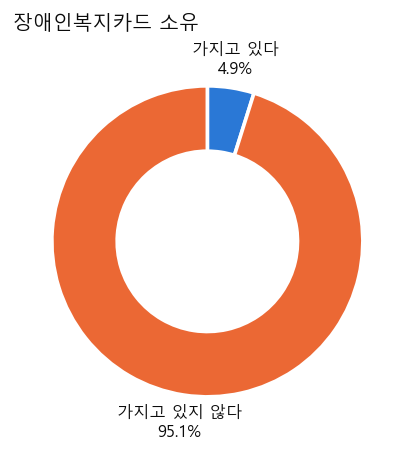
12. 활동제약: 이동(계단)
| 범주 | 표본 수 | 표본 % | 가중 % |
|---|---|---|---|
| 전혀 어렵지 않다 | 27,578 | 81.2 | 84.2 |
| 약간 어렵다 | 4,667 | 13.7 | 11.8 |
| 상당히 어렵다 | 1,567 | 4.6 | 3.7 |
| 전혀 할 수 없다 | 132 | 0.4 | 0.3 |
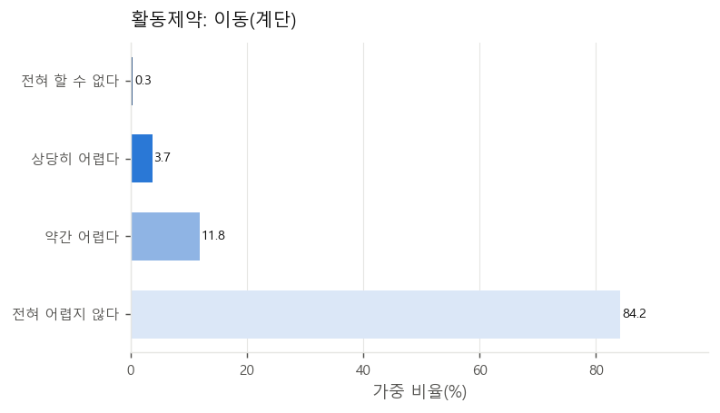
13. 활동제약: 기억·집중
| 범주 | 표본 수 | 표본 % | 가중 % |
|---|---|---|---|
| 전혀 어렵지 않다 | 28,407 | 83.7 | 85.6 |
| 약간 어렵다 | 4,892 | 14.4 | 12.7 |
| 상당히 어렵다 | 606 | 1.8 | 1.5 |
| 전혀 할 수 없다 | 39 | 0.1 | 0.1 |
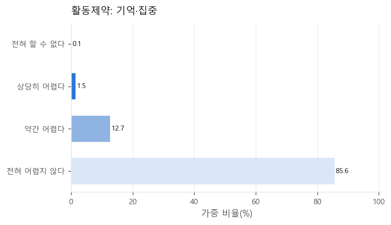
14. 월평균 가구소득
가구 단위 집계 (18,467가구)
| 범주 | 표본 수 | 표본 % | 가중 % |
|---|---|---|---|
| 100만원 미만 | 3,223 | 17.5 | 14.2 |
| 100~200만원미만 | 2,774 | 15.0 | 13.0 |
| 200~300만원미만 | 3,144 | 17.0 | 16.3 |
| 300~400만원미만 | 2,701 | 14.6 | 15.2 |
| 400~500만원미만 | 1,986 | 10.8 | 11.7 |
| 500~600만원미만 | 1,585 | 8.6 | 9.4 |
| 600~700만원미만 | 885 | 4.8 | 5.5 |
| 700~800만원미만 | 685 | 3.7 | 4.5 |
| 800만원이상 | 1,484 | 8.0 | 10.4 |
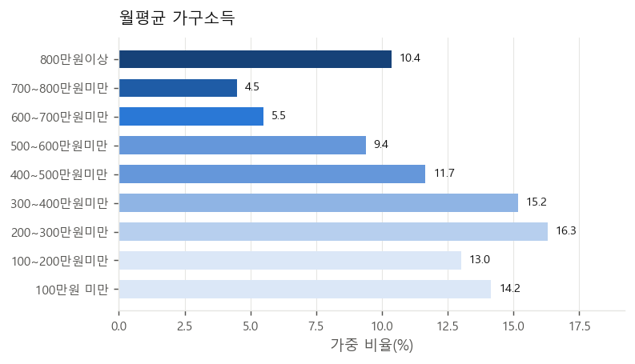
15. 주관적 소득수준
비해당·결측 15,491명 제외
| 범주 | 표본 수 | 표본 % | 가중 % |
|---|---|---|---|
| 매우 여유 있다 | 315 | 1.7 | 1.9 |
| 약간 여유 있다 | 2,379 | 12.9 | 13.8 |
| 적정하다 | 6,186 | 33.5 | 33.1 |
| 약간 부족하다 | 6,989 | 37.9 | 37.1 |
| 매우 부족하다 | 2,584 | 14.0 | 14.1 |
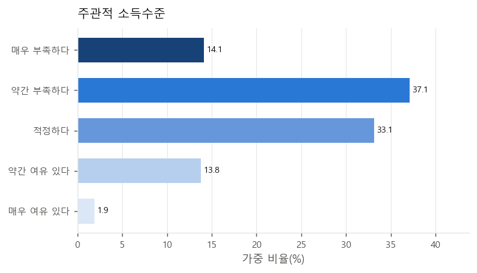
16. 소득 만족도
비해당·결측 6,489명 제외
| 범주 | 표본 수 | 표본 % | 가중 % |
|---|---|---|---|
| 매우 만족한다 | 998 | 3.6 | 3.7 |
| 약간 만족한다 | 6,603 | 24.1 | 24.3 |
| 보통이다 | 9,674 | 35.2 | 34.4 |
| 약간 불만족한다 | 6,856 | 25.0 | 24.7 |
| 매우 불만족한다 | 3,324 | 12.1 | 12.9 |
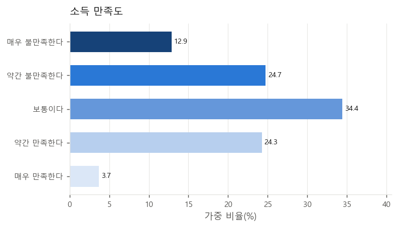
17. 계층의식
| 범주 | 표본 수 | 표본 % | 가중 % |
|---|---|---|---|
| 상상 | 336 | 1.0 | 1.2 |
| 상하 | 799 | 2.4 | 2.7 |
| 중상 | 8,209 | 24.2 | 25.0 |
| 중하 | 12,409 | 36.6 | 37.1 |
| 하상 | 6,919 | 20.4 | 19.4 |
| 하하 | 5,272 | 15.5 | 14.6 |
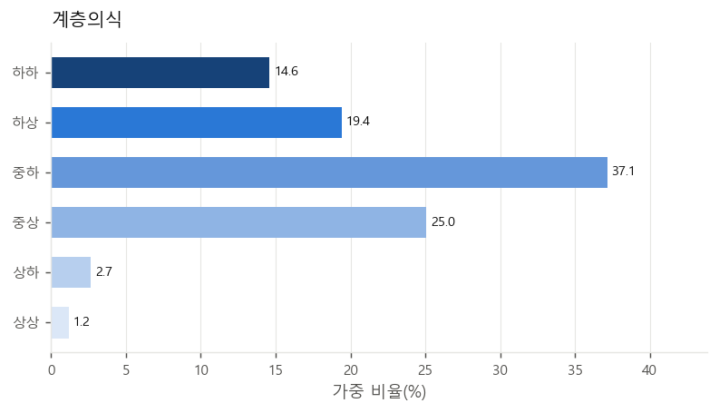
18. 생활비 마련방법 (60세+)
비해당·결측 21,144명 제외
| 범주 | 표본 수 | 표본 % | 가중 % |
|---|---|---|---|
| 본인 또는 배우자가 마련 | 10,125 | 79.1 | 79.7 |
| 자녀 또는 친척 지원 | 1,227 | 9.6 | 10.3 |
| 정부 및 사회단체 지원(정부 보조 등) | 1,448 | 11.3 | 10.0 |
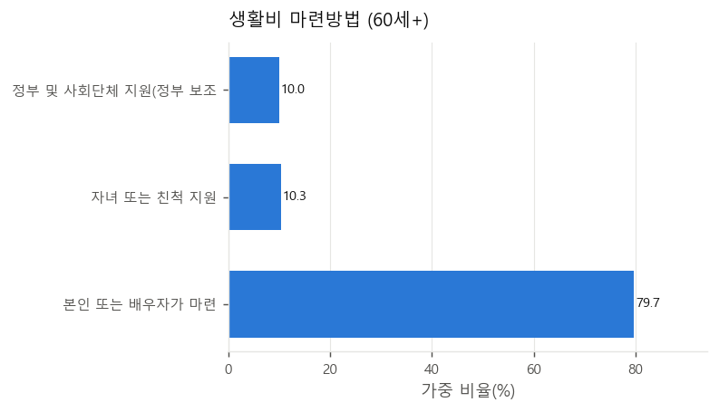
19. 현재 소득 유무
비해당·결측 1,884명 제외
| 범주 | 표본 수 | 표본 % | 가중 % |
|---|---|---|---|
| 있다 | 27,455 | 85.6 | 84.5 |
| 없다 | 4,605 | 14.4 | 15.5 |
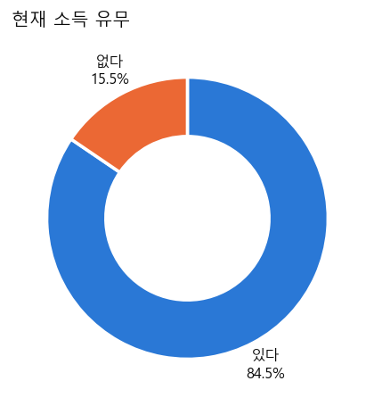
20. 거처 종류
가구 단위 집계 (18,467가구)
| 범주 | 표본 수 | 표본 % | 가중 % |
|---|---|---|---|
| 단독주택 | 6,644 | 36.0 | 28.8 |
| 아파트 | 9,274 | 50.2 | 53.9 |
| 연립·다세대주택 | 1,770 | 9.6 | 12.3 |
| 기타 | 779 | 4.2 | 5.0 |
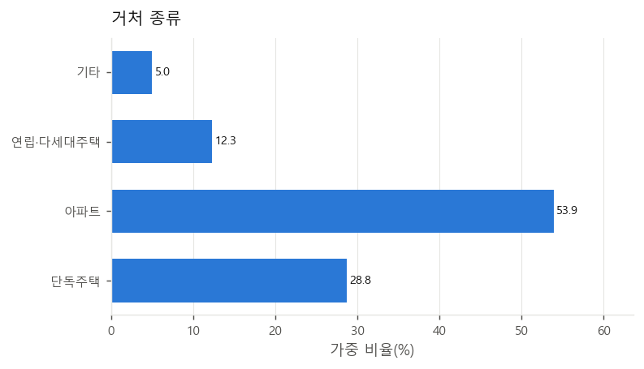
21. 주택 점유형태
가구 단위 집계 (18,467가구)
| 범주 | 표본 수 | 표본 % | 가중 % |
|---|---|---|---|
| 자가 | 11,302 | 61.2 | 56.7 |
| 전세 | 2,139 | 11.6 | 15.0 |
| 보증금 있는 월세 | 3,950 | 21.4 | 23.2 |
| 보증금 없는 월세(사글세) | 297 | 1.6 | 1.4 |
| 무상(자가는 아니지만 세 없이 무상으로 사는 경우) | 779 | 4.2 | 3.7 |
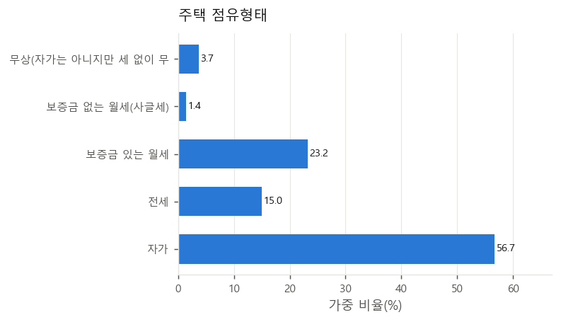
22. 경제활동 여부
| 범주 | 표본 수 | 표본 % | 가중 % |
|---|---|---|---|
| 하였다 | 20,158 | 59.4 | 60.3 |
| 하지 않았다 | 13,786 | 40.6 | 39.7 |
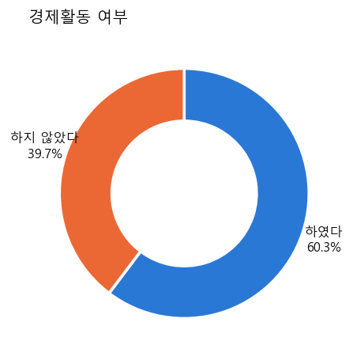
23. 종사상 지위
비해당·결측 13,786명 제외
| 범주 | 표본 수 | 표본 % | 가중 % |
|---|---|---|---|
| 임금근로자 | 14,749 | 73.2 | 76.6 |
| 고용원이 있는 자영업자 | 1,083 | 5.4 | 5.7 |
| 고용원이 없는 자영없자 | 3,460 | 17.2 | 14.5 |
| 무급 가족 종사자 | 866 | 4.3 | 3.3 |
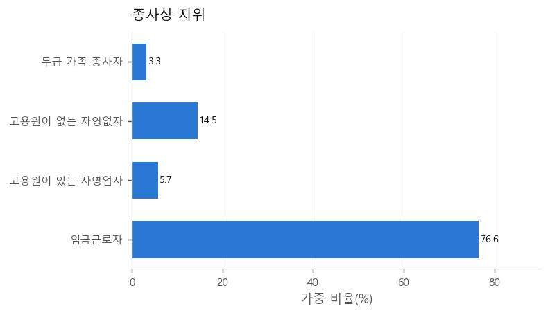
24. 임금근로자 구분
비해당·결측 19,195명 제외
| 범주 | 표본 수 | 표본 % | 가중 % |
|---|---|---|---|
| 상용근로자 | 10,615 | 72.0 | 74.4 |
| 임시근로자 | 2,963 | 20.1 | 17.6 |
| 일용근로자 | 1,171 | 7.9 | 7.9 |
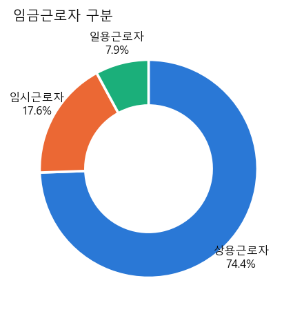
25. 직장 산업대분류
비해당·결측 13,786명 제외
| 범주 | 표본 수 | 표본 % | 가중 % |
|---|---|---|---|
| 농업, 임업 및 어업 | 1,651 | 8.2 | 5.0 |
| 광업 | 12 | 0.1 | 0.0 |
| 제조업 | 3,127 | 15.5 | 16.5 |
| 전기, 가스, 증기 및 공기조절 공급업 | 110 | 0.5 | 0.6 |
| 수도, 하수 및 폐기물 처리, 원료 재생업 | 124 | 0.6 | 0.7 |
| 건설업 | 1,471 | 7.3 | 7.2 |
| 도매 및 소매업 | 1,960 | 9.7 | 11.1 |
| 운수 및 창고업 | 1,066 | 5.3 | 5.6 |
| 숙박 및 음식점업 | 1,598 | 7.9 | 7.9 |
| 정보통신업 | 473 | 2.3 | 3.5 |
| 금융 및 보험업 | 471 | 2.3 | 2.7 |
| 부동산업 | 404 | 2.0 | 2.0 |
| 전문, 과학 및 기술 서비스업 | 746 | 3.7 | 4.6 |
| 사업시설 관리, 사업지원 및 임대 서비스업 | 719 | 3.6 | 3.9 |
| 공공행정, 국방 및 사회보장 행정 | 1,118 | 5.5 | 4.6 |
| 교육 서비스업 | 1,392 | 6.9 | 7.1 |
| 보건업 및 사회복지 서비스업 | 2,536 | 12.6 | 11.3 |
| 예술, 스포츠 및 여가관련 서비스업 | 366 | 1.8 | 1.9 |
| 협회 및 단체, 수리 및 기타 개인 서비스업 | 776 | 3.8 | 3.5 |
| 가구내 고용활동 및 달리 분류되지 않은 자가소비 생산활동 | 29 | 0.1 | 0.2 |
| 국제 및 외국기관 | 9 | 0.0 | 0.1 |
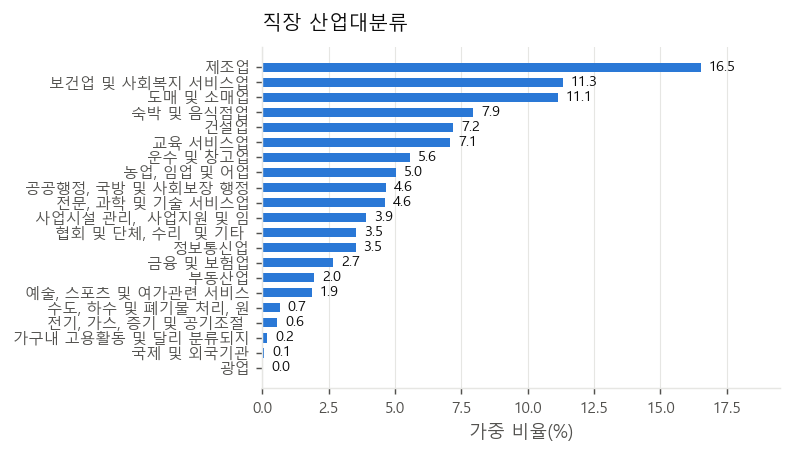
26. 직업대분류
비해당·결측 13,786명 제외
| 범주 | 표본 수 | 표본 % | 가중 % |
|---|---|---|---|
| 관리자 | 2 | 0.0 | 0.0 |
| 전문가 및 관련 종사자 | 93 | 0.5 | 0.4 |
| 사무 종사자 | 151 | 0.7 | 0.6 |
| 서비스 종사자 | 91 | 0.5 | 0.3 |
| 판매 종사자 | 53 | 0.3 | 0.2 |
| 농림·어업 숙련？종사자 | 58 | 0.3 | 0.1 |
| 기능원 및 관련 기능 종사자 | 59 | 0.3 | 0.2 |
| 장치·기계조작 및 조립 종사자 | 112 | 0.6 | 0.4 |
| 단순노무 종사자 | 97 | 0.5 | 0.3 |
| 관리자 | 391 | 1.9 | 1.9 |
| 전문가 및 관련 종사자 | 3,577 | 17.7 | 20.7 |
| 사무 종사자 | 3,481 | 17.3 | 20.1 |
| 서비스 종사자 | 2,674 | 13.3 | 12.6 |
| 판매 종사자 | 1,597 | 7.9 | 8.6 |
| 농림·어업 숙련？종사자 | 1,529 | 7.6 | 4.7 |
| 기능원 및 관련 기능 종사자 | 1,696 | 8.4 | 8.1 |
| 장치·기계조작 및 조립 종사자 | 1,806 | 9.0 | 8.7 |
| 단순노무 종사자 | 2,633 | 13.1 | 11.7 |
| 군인 | 58 | 0.3 | 0.4 |
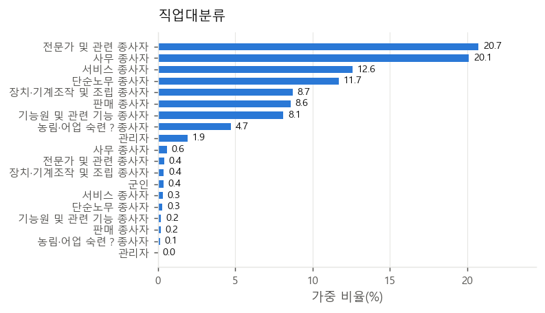
27. 고용 안정성 인식
비해당·결측 13,839명 제외
| 범주 | 표본 수 | 표본 % | 가중 % |
|---|---|---|---|
| 매우 많이 느낀다 | 2,580 | 12.8 | 14.1 |
| 느끼는 편이다 | 7,868 | 39.1 | 40.2 |
| 느끼지 않는 편이다 | 7,263 | 36.1 | 34.6 |
| 전혀 느끼지 않는다 | 2,394 | 11.9 | 11.1 |
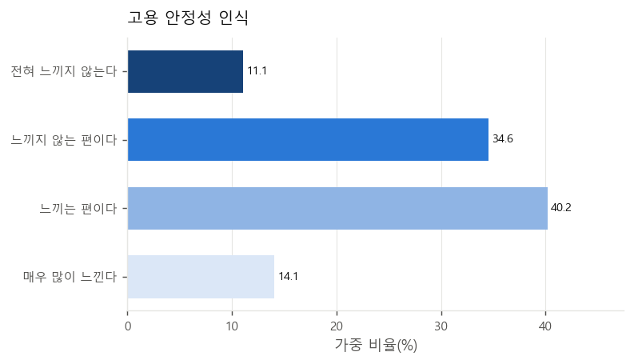
28. 자녀 유무
비해당·결측 21,144명 제외
| 범주 | 표본 수 | 표본 % | 가중 % |
|---|---|---|---|
| 있다 | 12,202 | 95.3 | 95.4 |
| 없다 | 598 | 4.7 | 4.6 |
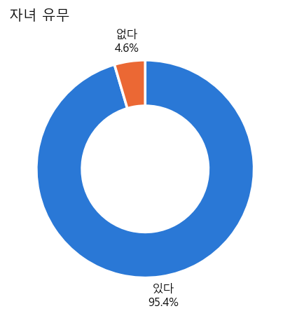
29. 자녀 동거 여부
비해당·결측 21,742명 제외
| 범주 | 표본 수 | 표본 % | 가중 % |
|---|---|---|---|
| 같이 살고 있다 | 2,706 | 22.2 | 27.9 |
| 같이 살고 있지 않다 | 9,496 | 77.8 | 72.1 |
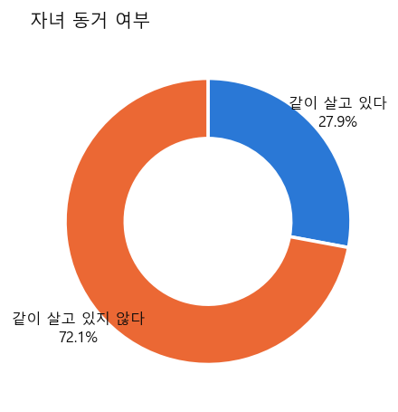